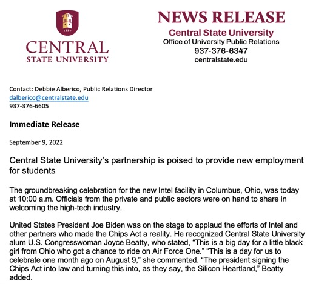

CSU Press Release

The groundbreaking celebration for the new Intel facility in Columbus, Ohio, was today at 10:00 a.m. Officials from the private and public sectors were on hand to share in welcoming the high-tech industry.
Contact: Debbie Alberico, Public Relations Director
dalberico@centralstate.edu
937-376-6605
Immediate Release
September 9, 2022
Central State University’s partnership is poised to provide new employment for students
The groundbreaking celebration for the new Intel facility in Columbus, Ohio, was today at 10:00 a.m. Officials from the private and public sectors were on hand to share in welcoming the high-tech industry.
United States President Joe Biden was on the stage to applaud the efforts of Intel and other partners who made the Chips Act a reality. He recognized Central State University alum U.S. Congresswoman Joyce Beatty, who stated, “This is a big day for a little black girl from Ohio who got a chance to ride on Air Force One.” “This is a day for us to celebrate one month ago on August 9,” she commented. “The president signing the Chips Act into law and turning this into, as they say, the Silicon Heartland,” Beatty added.
Biden said of Beatty, “I don’t think we could have gotten the Infrastructure Bill done without Joyce. “I don’t know what you did in those last four hours, but you got it done,” he added.
Ohio colleges like Central State University, Ohio’s only publicly funded Historically Black College and Universities, are ready for their share of 50 million dollars in partnerships with Intel and the federal government, to help develop students who can work at Intel.
CSU Provost Dr. F. Erik Brooks said, “We are proud of CSU’s Faculty and staff’s efforts in creating a new program in collaboration with other colleges and universities across Ohio that addresses Intel’s need and provides meaningful employment opportunities for our students.”
Intel announced the first phase of funding for its Ohio Semiconductor Education and Research Program. A recent Intel press release said, “during this first phase, Intel is providing 17.7 million dollars for eight proposals from leading institutions and collaborators in Ohio to develop semiconductor-focused education and workforce programs.”
“The Intel Semiconductor Education Program at Central State University is our journey to promote diversity in the semiconductor field by creating a pipeline to provide practical learning experiences in semiconductor fabrication techniques and processes for underrepresented students and preparing them for Intel careers,” said Mohammadreza Hadizadeh, Central State University Associate Professor of Physics. “We are so excited to receive this award and work with Intel and our collaborators to train our students and develop a new phase of our education and research in semiconductor manufacturing,” he added.
“As the only public Historically Black University in Ohio, Central State University has an obligation to produce highly qualified graduates with the knowledge and skills necessary to ensure that the United States maintains its leading scientific and innovative edge in the global economy.” “CSU is excited to work with Intel as a higher educational partner to create a diversified workforce that represents the full spectrum of the United States.” “Central State and our collaborative partners including Columbus State Community College, The Ohio State University, Clark State Community College, and Wright State University will create a pipeline that produces underrepresented students prepared for Intel careers by giving students knowledge and practical experience in semi-conductor fabrication techniques, processes, and equipment by establishing a semiconductor educational program at CSU,” said University President Dr. Jack Thomas.
“Central State offers Intel a unique opportunity to partner with an institution of higher education with a demonstrated record of producing highly qualified underrepresented graduates in manufacturing engineering and other fields necessary to meet Intel’s workforce demands,” stated Morakinyo A.O. Kuti, Ph.D., Interim Dean, John W. Garland College of Engineering, Science, Technology, and Agriculture and Director of the 1890 Land-Grant Programs.
“The Industrial Midwest is back! It was exciting to be in the Silicon Heartland at Intel’s groundbreaking with local, state, and national leaders. President Biden recognized Central State University for our partnership with Intel and CSU alum, Congresswoman Joyce Beatty, for her significant contribution to the Chips Act,’’ exclaimed Thomas.